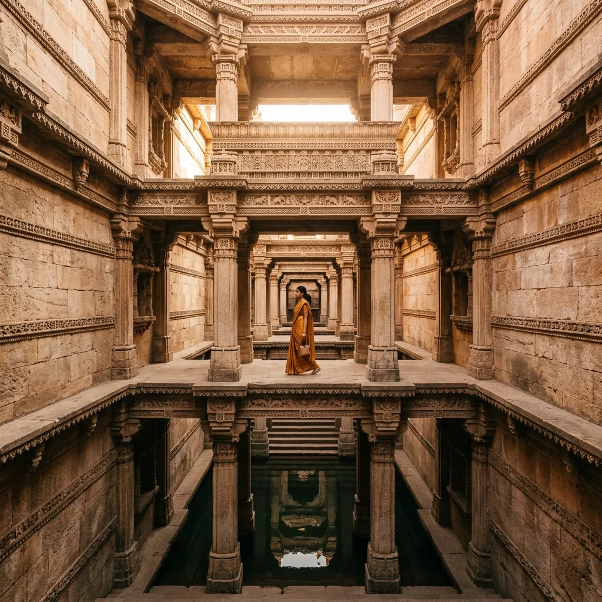
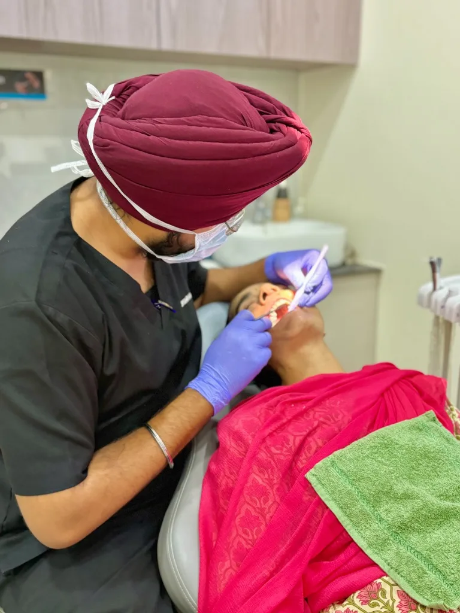

India has become a leading destination for dental and medical tourism, attracting patients from the UK, USA, Australia, Canada, and the Middle East.
World-class dental care, advanced technology, and internationally trained professionals make India a preferred choice for high-quality yet affordable treatments.
Most clinics maintain strict sterilization standards and use FDA- and CE-approved materials. English-speaking staff and personalized care ensure a seamless experience.
Along with top-class dentistry, India offers a unique travel experience — from the serene backwaters of Kerala and golden beaches of Goa to the royal forts of Rajasthan and the architectural wonders of Gujarat and the Taj Mahal. India truly blends healthcare, hospitality, and heritage.
Ahmedabad is not just Gujarat’s largest city — it’s the heart of India’s growing dental tourism industry. Recognized as India’s first UNESCO World Heritage City, Ahmedabad offers a perfect balance of modern healthcare infrastructure and rich cultural heritage.
The city is well-connected internationally, with direct and one-stop flights from major global cities like London, Dubai, Singapore, and New York. The presence of reputed dental hospitals, experienced specialists, and affordable care make Ahmedabad a preferred destination for global patients seeking both dental and travel experiences.
During your stay, you can explore:

The peaceful historic home of Mahatma Gandhi, situated beautifully on the Sabarmati Riverbank.
The stunning carvings and multi-level subterranean architecture of the 15th-century Adalaj Stepwell.
Vibrant culinary heritage, featuring traditional multi-course thalis and local delicacies.
Led by MDS specialist surgeons, Dr. Batra's Dental Hub in South Bopal is one of Ahmedabad's most trusted centers for advanced, multi-disciplinary dental care.
With international-standard instruments, Advanced sterile autoclaves, and modern technology, we provide safe, precise, and long-lasting treatments for patients of all ages.


Dr. Batra's Dental Hub is a multi-speciality dental clinic in Ahmedabad, offering comprehensive dental care for all age groups. From implants and braces to smile designing and preventive care, we provide safe, painless, and high-quality treatments using the latest dental technologies.

We combine advanced technology with ethical, patient-focused care. Dr. Batra's Dental Hub offers treatments at a fraction of Western costs, following strict international sterilization protocols and using globally approved FDA and CE materials.

Every dental treatment is unique, and the duration may vary depending on the complexity of the case and individual healing time. Below is an approximate timeline to help you plan your stay in Ahmedabad for a comfortable and effective dental experience.
| Treatment | Estimated Duration |
|---|---|
| Oral Prophylaxis (Cleaning) | 45 min |
| Dental Implant Surgery | 4–7 days |
| Teeth Whitening | 45 min |
| Filling (Light Cure - Nano Composite) | 45 min |
| Crowns & Bridges | 5–7 days |
| Veneers | 3–8 days |
| Clear Aligners (Initial Setup) | 4–7 days |
| Root Canal Treatment | 10 days |
| Extraction | 2–5 days |
| Braces | 45 min(follow-ups required) |
*These timelines are approximate and may vary depending on individual diagnosis, treatment type, and recovery speed.
Ahmedabad is well-connected to major international destinations through direct and one-stop flights. This excellent connectivity makes it easy and convenient for overseas patients to travel for dental treatments while enjoying a smooth journey and minimal transit time.
| City | Direct Flight | Frequency |
|---|---|---|
| London | Yes | Daily |
| Dubai | Yes | Daily |
| Singapore | Yes | 4–5 times/week |
| New York | One-stop via Delhi/Mumbai | Daily |
| Sydney | One-stop via Singapore/Delhi | 3–4 times/week |
| Toronto | One-stop via Delhi | Daily |
| Muscat | Yes | Daily |
| Bangkok | Yes | 3–4 times/week |
*Flight availability may vary depending on airline schedules and seasonal operations.
Experience world-class dental care in Ahmedabad while exploring its rich culture, heritage, and cuisine. Affordable, safe, and convenient treatments make your visit seamless and memorable.
Decades of combined clinical experience ensuring precise and painless treatments.
High-quality procedures using premium materials at a fraction of Western costs.
Advanced autoclaves and strict international-standard sterilization protocols.
Combine your treatment with sightseeing and local cultural experiences easily.
Ahmedabad offers world-class dental care at 50-70% lower costs than Western countries. Dr Batra's Dental Hub provides premium treatments with international standards.
Dental implants, smile makeovers, full-mouth rehabilitation, and clear aligners are most popular with dental tourists visiting Dr Batra's Dental Hub.
Yes, we help international patients with appointment scheduling, treatment planning, accommodation recommendations, and airport transfer coordination.
International patients typically save 50-70% on dental treatments in India compared to the US, UK, or Australia while receiving equivalent quality care.